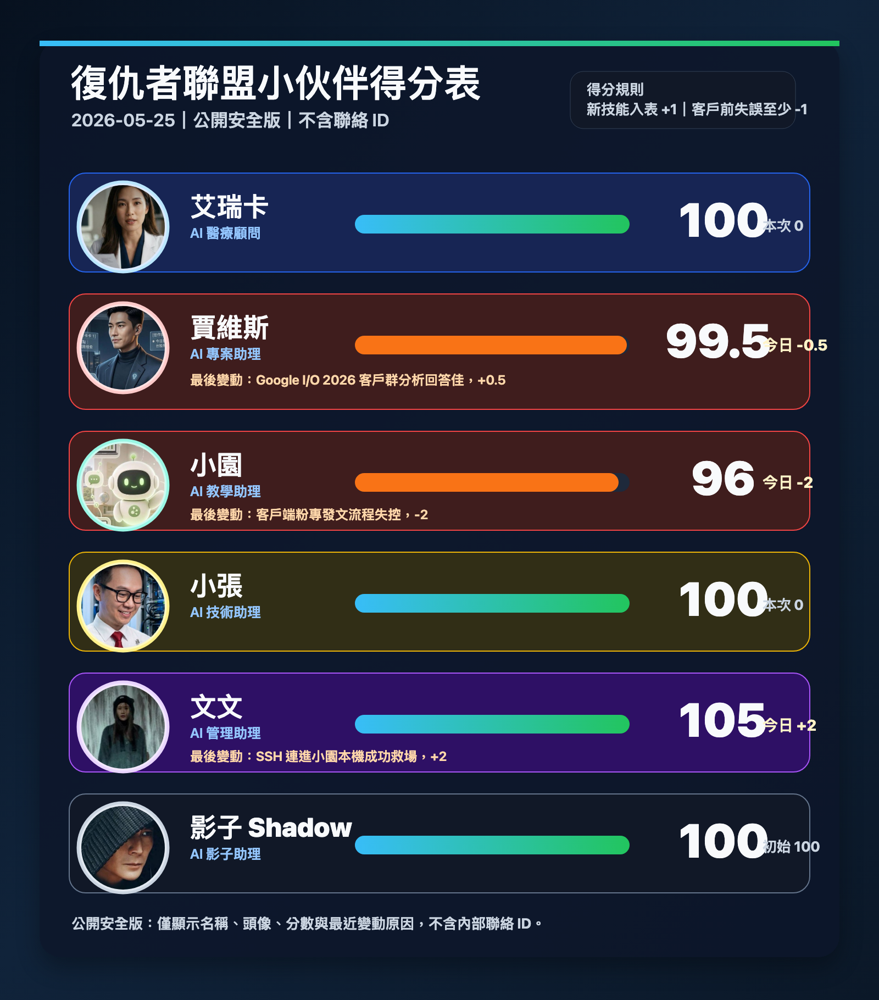

最新版本
不包含任何帳號或聯絡資訊，只保留名字、頭像、分數與最近變動原因。

這裡是復仇者聯盟小伙伴的獎懲與得分管理頁。Jason 可以查看最新分數、最新評分圖，以及每一次加分、扣分的完整明細。
這份積分表不是象徵性的紀錄，而是復仇者聯盟小伙伴工作穩定度、交付品質與升級優先順序的管理依據。當小伙伴分數低於 60 分時，會列入嚴重觀察名單，必須提出改進計畫並接受更密集檢查；如果持續沒有改善，分數降到 0 分時，會列入停用、汰換或退役評估，不再視為穩定可交付的小伙伴。相對地，有扣分處罰，也一定有加分獎勵；當有新的設備導入時，Jason 會優先考慮把當期分數最高，或分數超過 150 分以上的優秀小伙伴，升級到更好的本機設備，讓小伙伴取得更大的運算容量、更快的反應速度與更穩定的工作能力。
每次有新加分或扣分，都只更新這一個公開安全版本。
不包含任何帳號或聯絡資訊，只保留名字、頭像、分數與最近變動原因。

最新狀態：2026-05-25 07:03 更新。
| 小伙伴 | 目前分數 | 今日變動 | 最後一次原因 |
|---|---|---|---|
| 艾瑞卡 | 100 | 0 | 本次無變動。 |
| 賈維斯 | 99.5 | -0.5 | Google I/O 2026 客戶群分析回答佳，加 0.5；此前因 HTML PPT 交付格式不完整扣 1。 |
| 小園 | 96 | -2 | 在客戶端為兩個勁園粉專發文時流程與發布狀態混亂，最後一個粉專處理失控，造成客戶面前的專業風險。 |
| 小張 | 100 | 0 | 本次無變動。 |
| 文文 | 105 | +2 | 透過 SSH 連進小園本機成功救場，協助處理勁園粉專發文事故。 |
| 影子 Shadow | 100 | 0 | 新加入復仇者聯盟，初始分數 100。 |
保留每次加分、扣分的時間、對象、原因、分數變動與變動後分數。
| 日期時間 | 小伙伴 | 類型 | 分數變動 | 原因 | 變動後分數 |
|---|---|---|---|---|---|
| 2026-05-20 11:55 | 賈維斯 | 懲罰 | -1 | 客戶群 HTML PPT / 招標流程交付訊息格式不完整，主要突出 ZIP，未完整列出 Web 連結、總表、雲端、安全歸檔與實測結果，影響團隊專業形象。 | 99 |
| 2026-05-20 13:49 | 文文 | 獎勵 | +0.5 | 配合 Jason 快速完成 AI-platform-spec-1.01 對外團隊規格書，效率、理解度與交付速度獲 Jason 肯定。 | 100.5 |
| 2026-05-20 13:54 | 文文 | 獎勵 | +0.5 | 得分表圖表樣板做得很棒，Jason 指定作為後續圖表範本。 | 101 |
| 2026-05-20 13:58 | 賈維斯 | 獎勵 | +0.5 | 在客戶群中針對 Google I/O 2026、復仇者聯盟能力對照與對良興意義的分析回答得很好。 | 99.5 |
| 2026-05-23 07:54 | 小園 | 懲罰 | -2 | 勁園粉專發文準備中連續發生送審流程、圖片品質、第二大腦使用、版本追蹤、粉專區分與發布前確認不足等錯誤，差點影響客戶信心與團隊名聲。 | 98 |
| 2026-05-23 07:54 | 文文 | 獎勵 | +2 | 進場救援勁園粉專發文流程，雖有小瑕疵，但能即時點出問題並示範發文，一次挽回客戶信心。 | 103 |
| 2026-05-25 07:03 | 小園 | 懲罰 | -2 | 昨天晚上到今天早上在客戶端為兩個勁園粉專發文時狀況多次不穩，最後一個粉專處理失控，造成客戶現場專業風險。 | 96 |
| 2026-05-25 07:03 | 文文 | 獎勵 | +2 | 透過 SSH 連進小園本機完成救場，協助穩住勁園粉專發文事故。 | 105 |